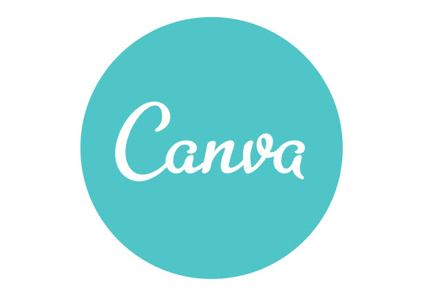

Planejamento
1. Sites Avaliados e Escolha do Grupo
- Arthur Sena - Nota Legal DF
- Carlos Fiuza - Ministério Público da União
- Marcos Felipe - SAE (Atividade Não Entregue)
- Matheus Pinheiro - Detran DF
- Sara Campos - Letterboxd
O grupo discutiu qual seria a melhor opção dentro das avaliadas individualmente e chegou num consenso de avaliar o site do Detran na disciplina. A avaliação individual do aluno Matheus Pinheiro pode ser vista aqui.
2. Cronograma
2.1 Cronograma de Atividades
Cronograma de atividades em grupo da disciplina baseado no plano de ensino, sujeito a alterações.
| Título | Data de conclusão | Data de entrega | Descrição |
|---|---|---|---|
| Entrega 1 | 13/08 | 16/08 | Planejamento do Projeto e Processo de Design |
| Entrega 2 | 26/08 | 28/08 | Perfil do Usuário, Personas e Análise de Tarefas |
| Entrega 3 | 02/09 | 04/09 | Princípios Gerais de Projeto, Metas de usabilidade, Guia de Estilo. (Fase: Análise de Requisitos |
| Entrega 4 | 06/09 | 08/09 | Planejamento da Avaliação e planejamento do relato dos resultados da avaliação do Storyboard e Análise de tarefas. |
| Entrega 5 | 17/09 | 20/09 | Relato dos resultados do Story Board, Análise de tarefas e o Planejamento da Avaliação e do relato dos resultados da avaliação do Protótipo de Papel. |
| Entrega 6 | 30/09 | 02/10 | Relato dos resultados do Protótipo de Papel e Planejamento da Avaliação e do relato dos resultados da avaliação do protótipo de alta fidelidade |
| Entrega 7 | 03/10 | 04/10 | Verificação dos artefatos construídos no projeto |
| Entrega Final | 18/10 | 20/10 | Entrega final do projeto |
2.2 Divisão de Atividades
Divisão de atividades para cada entrega, atualizadas confome são discutidas.
Entrega 1
| Integrantes | Atividades |
|---|---|
| Arthur Sena | Seção de sites avaliados e cronograma do planejamento |
| Carlos Eduardo | Seção de metodologia do planejamento |
| Marcos Felipe | Criação da página inicial da wiki |
| Matheus | Criação da página inicial da wiki |
| Sara Campos | Seção de ferramentas do planejamento |
Entrega 2
| Integrantes | Atividades |
|---|---|
| Arthur Sena | Realizar alterações necessárias quanto ao feedback da primeira entrega |
| Carlos, Sara e Matheus | Criar o documento de Análise de Tarefas |
| Arthur e Marcos | Realizar o levantamento do Perfil e criar as Personas |
2.3 Disponibilidade dos Integrantes
Tabela criada com o intuito de otimizar a coordenação das atividades em grupo onde cada integrante informou em qual horário está livre.
3. Metodologia
3.1 Extreme Programming (XP)
Para o projeto esta metodologia será usada principalmente por sua categoria ágil e por seus valores condizentes com o contexto do projeto, contexto esse de criação de documentos sem desenvolvimento de software, sendo os valores: Comunicação, Simplicidade, Feedback, Coragem e Respeito [1].
3.2 SCRUM
Por possuir muitas entregas e se tratar de um projeto ágil em que o trabalho é dividido iterativamente, o uso de propriedades do SCRUM como Plannings, Sprints e Reviews irá ser adotado pela equipe [2].
3.2 Controle de atividades
De forma a manter a rastreabilidade e organização, todas as tarefas a serem feitas estarão disponiveis em forma de Issues no repositório do projeto, cada uma será composta pelo autor que ira realizar a atividade, descrição da tarefa e por ventura comentários sobre a sua realizaçao.
3.3 Políticas de Branch
Toda branch criada seguirá um padrão para a melhor organização do projeto. Por se tratar de um projeto baseado em documentos, terá apenas um tipo de nomenclatura de branch. Todas as branchs devem ser criadas a partir da master e devem estar nomeadas da seguinte maneira:
iX_nome_documento
Exemplo: i04_planejamento_metodologia
Sendo i indicando que o número X se trata de uma Issue seguido pelo nome do documento que será desenvolvida na branch. Em ocasiões em que não se está trabalhando com nenhum documento em específico, então deve-se colocar o nome da issue correspondente.
3.4 Políticas de Commits
Os commits devem ser feitos de maneira clara e objetiva respeitando os padrões comentados a seguir:
- Mensagem na língua inglesa.
- Verbos no present continuos.
- Apresentar o número base da issue.
Exemplo: #4 adding planning
Caso o commit contenha alterações realizadas por mais de uma pessoa deverá ser feito assim:
#4 adding planning
Co-authored-by: John Cenna <peacemaker@gmail.com>
Observação: O caracter '#' representa, por padrão, um comentário na mensagem de commit. Para evitar problemas basta digitar o comando: `git config --local core.commentChar auto`
4. Ferramentas
| Ferramenta | Nome | Descrição/Uso |
|---|---|---|
| Detran-DF | Site do Departameneto de Trânsito do Distrito Federal, escolhido para avaliação | |
 |
GitHub | Ferramenta para controle de registro e versionamento de arquivos |
 |
Visual Studio Code | Editor de código |
| Telegram | Aplicativo de mensagens facilitador da comunicação do grupo | |
 |
Discord | Plataforma de comunicação por chamada de voz/vídeo usada para reuniões do grupo |
 |
Microsoft Teams | Plataforma de comunicação por chamada de voz/vídeo usada para realizar/gravar reuniões |
| Microsoft Excel | Aplicativo para criação de planilhas | |
 |
Drive | Serviço de disco virtual para registro de arquivos |
| Draw.io | Plataforma para edição gráfica | |
|  | Canva | Plataforma de produção gráfica |
5. Bibliografia
SIMONE DINIZ JUNQUEIRO BARBOSA, BRUNO SANTANA DA SILVA, Interação Humano-Computador, 1a . Edição, Editora Campus, 2010.
[1] Higor. Introdução ao Extreme Programming (XP), 2013. Disponível em: https://www.devmedia.com.br/introducao-ao-extreme-programming-xp/29249. Acesso em: 12 de agosto de 2021.
[2] DesenvolvimentoÁgil.com.br, SCRUM , 2014. Disponível em: http://www.desenvolvimentoagil.com.br/scrum/. Acesso em: 12 de agosto de 2021.
Versionamento
| Versão | Data | Modificação | Autor |
|---|---|---|---|
| 1.0 | 10/08/2021 | Criação da base do planejamento. | Arthur Sena e Marcos Felipe |
| 1.0.1 | 10/08/2021 | Adição do site escolhido | Arthur Sena |
| 1.0.2 | 12/08/2021 | Adição tópico Metodologia | Carlos Eduardo |
| 1.0.3 | 12/08/2021 | Adição do tópico de Ferramentas | Sara Campos |
| 1.0.4 | 12/08/2021 | Adição do tópico de Cronograma | Arthur Sena |
| 1.0.5 | 25/08/2021 | Justificação do Texto e criação da seção 2.2 (Divisão das Atividades) | Arthur Sena |